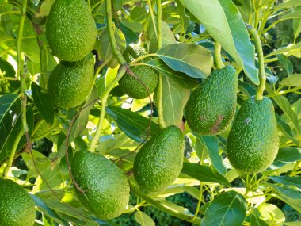

Featured Product
Hass Avocados
We sell Hass avocado seedlings for Kenya shillings 200/= per piece/plant. Growing Hass Avocado is profitable. There is a ready market for the fruit both locally and internationally. There are also local factories making Avocado Oil in Kenya, which can be your plan B if you will not be able to sell in the local or international market. Avocado farming is the way to go.
Learn MoreFeatured Product

Macadamia
For those interested in commercial farming, our macadamia trees can be a profitable investment. Macadamia nuts are in high demand in both local and international markets, making it a potentially lucrative venture.
Read More